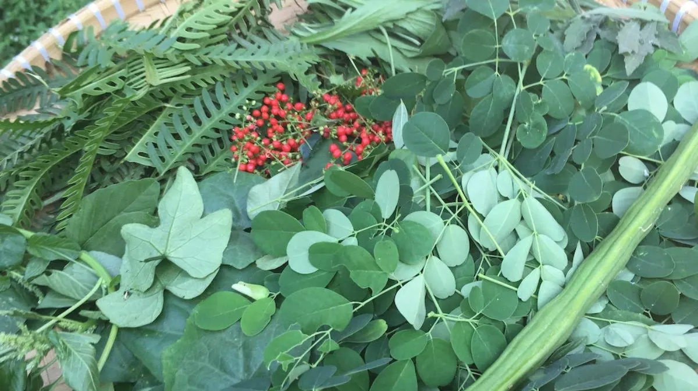

Archive · APARN Conference
Graduate Research Meet-up
The third meeting turned the floor over to graduate researchers. PhD, Masters, Honours and independent researchers each had five minutes to introduce their project, so everyone could see the range of artistic research in the region and find future collaborators.
At a glance
- Label
- APARN2021
- Host
- Convened from Melbourne and Yogyakarta, on Google Meet
- Format
- A half-day online workshop with five-minute introductions to each project
- Practice
- Emerging researchers
- Note
- 11:00–15:00 Yogyakarta, 15:00–19:00 Melbourne
Highlights
- Five minutes or 500 words per project, with an optional single slide
- Every applicant was invited into the Google Group afterwards
Event organisers
- Danny Butt, Convenor
- Kurniawan Adi Saputro, Convenor
- Chloe Ho, Co-organiser
- Elyssia Bugg, Co-organiser
- Moonis Ahmad, Co-organiser
Event organisers are listed for this edition. Network convenors are on the About page.
